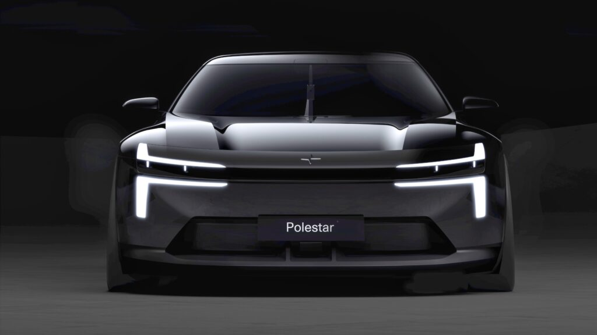

Polestar Formula 2030: the shape of the next 2
Polestar's Formula 2030 concept previews the design language for the next Polestar 2 (2027) and the 7 — low-slung, still Scandinavian-minimal, Dual Blade lights intact, and a single motorsport-style vertical wiper as the flourish. Evolution over revolution, shown by a brand under real pressure to prove its future.
极星 Formula 2030 概念车预示了下一代极星 2（2027）与极星 7 的设计语言：低趴、依旧北欧极简、Dual Blade 大灯保留，再以一支赛车式竖置雨刮点睛。这是渐进而非颠覆——由一个正承受巨大压力、亟需证明未来的品牌拿出。
폴스타 포뮬러 2030 콘셉트는 차세대 폴스타 2(2027)와 7의 디자인 언어를 예고한다. 낮게 깔린 자세, 여전한 스칸디나비안 미니멀, 듀얼 블레이드 램프 유지, 그리고 모터스포츠식 수직 와이퍼 하나가 포인트. 미래를 증명해야 하는 압박 속 브랜드가 택한 '혁명 아닌 진화'.
Carscoops →2026-09-08